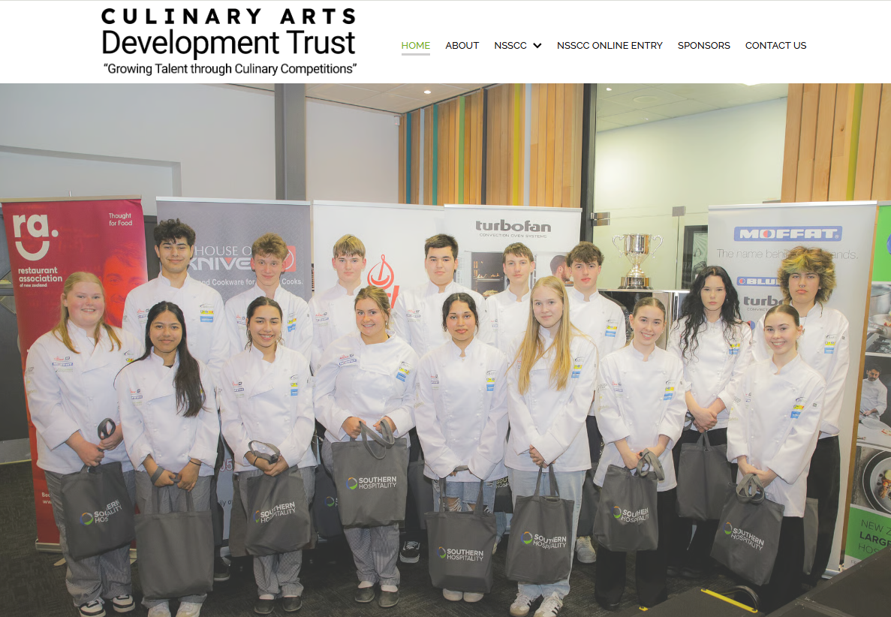

NSSCC
Overview statement regarding the scope and vision for this multimedia application or interface build.
Updating the overall look of the NSSCC Website for the 2025 competition, working on the social media for the business via; Instagram, Facebook and Tiktok, and finally attending the live events for photography and videography.

// FIG 01 // INTERFACE OVERVIEW DIAGRAM